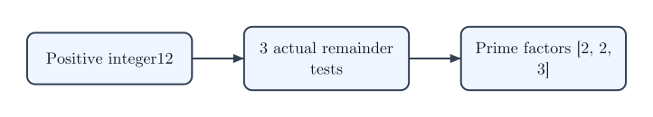
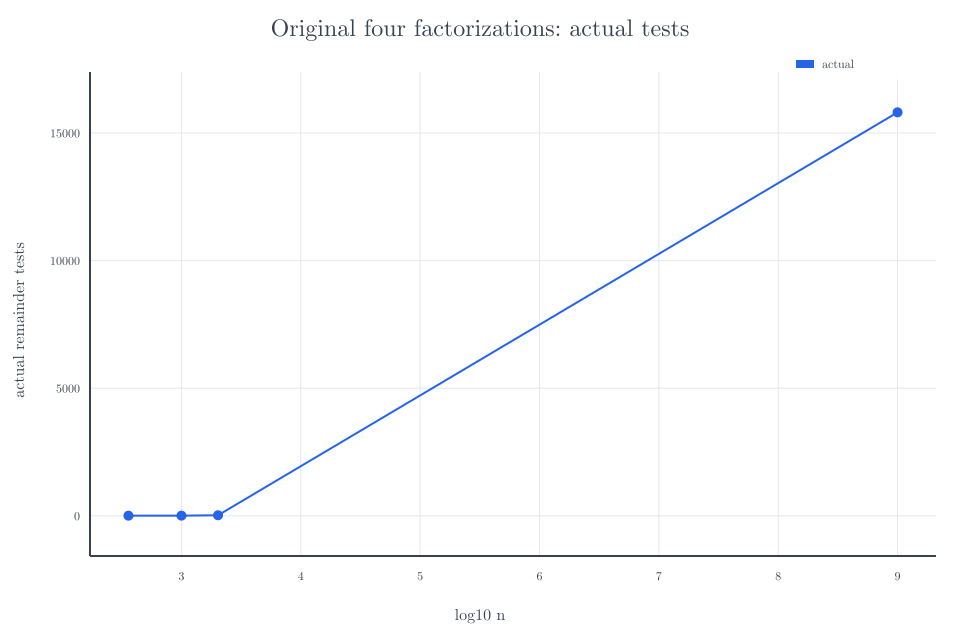
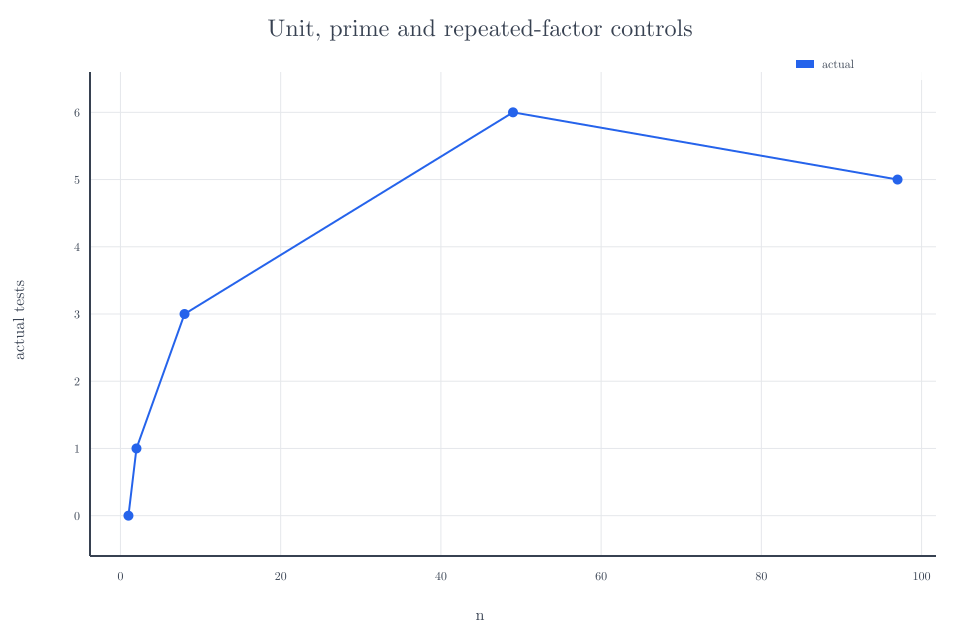
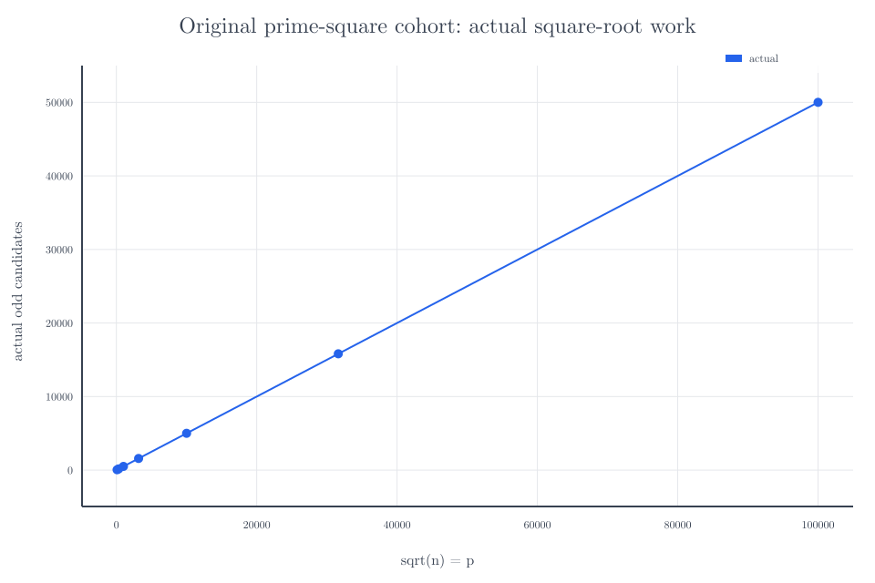

Trial division: safe factors and actual remainder tests
Abstract
Factoring a small positive integer requires finding its prime divisors with multiplicity. Trial division solves this by removing each possible divisor before advancing, with a square-root worst-case search.
The method
After removing factors below d, a composite d cannot divide the remainder unless a smaller prime was missed. Stop when d>n/d: if the remaining n were composite, it would have a divisor at most its square root. Using n/d avoids overflow in d*d. For p² with odd prime p, (p−1)/2 odd candidates are visited; remainder tests also include successful divisions and final failed divisibility checks.
Simple worked example
#include <dm/dm.hpp>
int main() {
namespace a = dm::algorithms;
namespace g = dm::graphics;
std::filesystem::create_directories("build");
auto r = a::trial_division_work(12);
std::print("| input | actual factors | remainder tests | odd candidates " "|\n|---:|---|---:|---:|\n|12|`{}`|{}|{}|\n",
r.factors, r.tests, r.odd_candidates);
g::Diagram concept_diagram(48, 1100);
concept_diagram.node("n0", {0, 0}, "Positive integer12");
concept_diagram.node("n1", {5, 0},
std::format("{} actual remainder tests", r.tests));
concept_diagram.node("n2", {10, 0},
std::format("Prime factors {}", r.factors));
concept_diagram.edge("n0", "n1").edge("n1", "n2");
concept_diagram.save_svg("build/trial_division_tiny.svg");
}| input | actual factors | remainder tests | odd candidates |
|---|---|---|---|
| 12 | [2, 2, 3] | 3 | 0 |

The retained original experiment
#include <dm/dm.hpp>
int main() {
namespace a = dm::algorithms;
namespace g = dm::graphics;
std::filesystem::create_directories("build");
std::print("| n | prime factors | tests |\n|---:|---|---:|\n");
std::vector<double> x, y;
for (std::uint64_t n : {360ULL, 1001ULL, 2027ULL, 1000000007ULL}) {
auto r = a::trial_division_work(n);
std::print("|{}|`{}`|{}|\n", n, r.factors, r.tests);
x.push_back(std::log10(double(n)));
y.push_back(r.tests);
}
auto p = g::RPlot::create();
p.line(x, y, "actual", {37, 99, 235}, 2);
p.points(x, y, "", {37, 99, 235}, 5);
p.title("Original four factorizations: actual tests").x_label("log10 n").y_label("actual remainder tests");
p.save_svg("build/trial_division_original.svg");
}| n | prime factors | tests |
|---|---|---|
| 360 | [2, 2, 2, 3, 3, 5] | 7 |
| 1001 | [7, 11, 13] | 8 |
| 2027 | [2027] | 23 |
| 1000000007 | [1000000007] | 15811 |

Checking the theory and controls
#include <dm/dm.hpp>
int main() {
namespace a = dm::algorithms;
namespace g = dm::graphics;
std::filesystem::create_directories("build");
std::vector<double> x, y;
std::print("| n | actual factors |\n|---:|---|\n");
for (std::uint64_t n : {1ULL, 2ULL, 8ULL, 49ULL, 97ULL}) {
auto r = a::trial_division_work(n);
std::print("|{}|`{}`|\n", n, r.factors);
x.push_back(n);
y.push_back(r.tests);
}
try {
a::trial_division_work(0);
} catch (const std::invalid_argument &) {
std::print("\nZero is rejected: it has no finite prime factorization.\n");
}
auto p = g::RPlot::create();
p.line(x, y, "actual", {37, 99, 235}, 2);
p.points(x, y, "", {37, 99, 235}, 5);
p.title("Unit, prime and repeated-factor controls").x_label("n").y_label(
"actual tests");
p.save_svg("build/trial_division_controls.svg");
}| n | actual factors |
|---|---|
| 1 | [] |
| 2 | [2] |
| 8 | [2, 2, 2] |
| 49 | [7, 7] |
| 97 | [97] |
Zero is rejected: it has no finite prime factorization.

Sensitivity and selected work
#include <dm/dm.hpp>
int main() {
namespace a = dm::algorithms;
namespace g = dm::graphics;
std::filesystem::create_directories("build");
std::vector<double> x, y;
std::print("| p | p squared | actual odd candidates | actual tests |\n|---:|---:|---:|---:|\n");
for (std::uint64_t p : {101ULL, 331ULL, 1009ULL, 3167ULL, 10007ULL,
31627ULL, 100003ULL}) {
auto r = a::trial_division_work(p * p);
std::print("|{}|{}|{}|{}|\n", p, p * p, r.odd_candidates, r.tests);
x.push_back(p);
y.push_back(r.odd_candidates);
}
auto p = g::RPlot::create();
p.line(x, y, "actual", {37, 99, 235}, 2);
p.points(x, y, "", {37, 99, 235}, 5);
p.title("Original prime-square cohort: actual square-root work").x_label(
"sqrt(n) = p").y_label("actual odd candidates");
p.save_svg("build/trial_division_work.svg");
}| p | p squared | actual odd candidates | actual tests |
|---|---|---|---|
| 101 | 10201 | 50 | 53 |
| 331 | 109561 | 165 | 168 |
| 1009 | 1018081 | 504 | 507 |
| 3167 | 10029889 | 1583 | 1586 |
| 10007 | 100140049 | 5003 | 5006 |
| 31627 | 1000267129 | 15813 | 15816 |
| 100003 | 10000600009 | 50001 | 50004 |

Interpretation and limits
Zero now throws instead of looping forever. One has an empty factor list. Full-width stopping is safe, but a work cap can prevent completion on hard64-bit inputs; exhaustion is not evidence of primality.
Every figure is saved locally by its complete editable program. No separate reconstruction supplies algorithm state. Counters describe the selected events, not elapsed time or peak memory.
References
Trial-division factorization proof above
Verified in the shared ten-document batch: 85 scoped native cases;21 directly
instrumented ASan/UBSan cases;36 executable public examples;63/63 definitions
across13 full scopes plus8 changed mixed-scope contracts;10 hovers;14393
independent records/67914 checks;frozen valid-input comparisons across all ten
families including bit-identical default Iris fits;11 checkout/installed
standalone headers and linked ten-family consumer;40 executed programs and40
inspected figures with both exports. Receipts:
build/mepml-conversion/batch-404-413/.